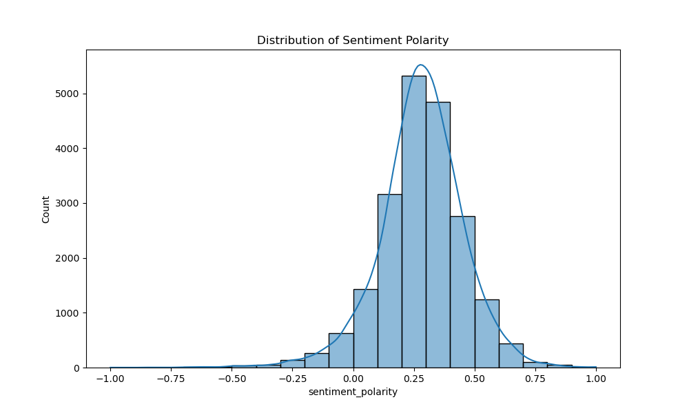
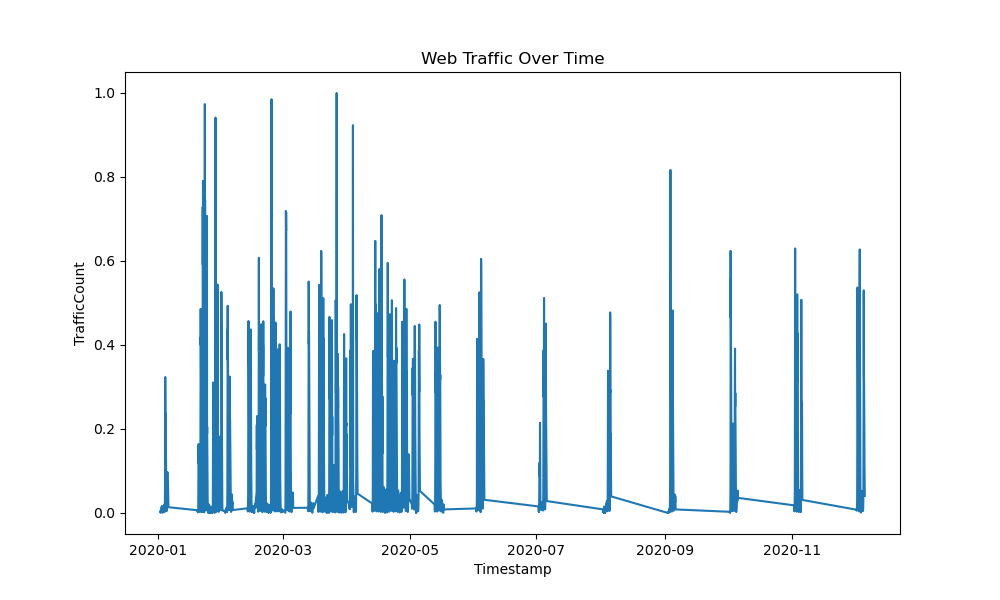

E-commerce Data Integration and Analytics
Problem Statement
E-commerce platforms generate vast amounts of data from web traffic, customer interactions, and sales. However, this data is often fragmented and unstructured, making it difficult for businesses to extract actionable insights. The challenge is to develop a streamlined ETL pipeline to integrate, clean, and analyze this data, providing valuable insights into website performance, customer sentiment, and sales trends. By addressing issues such as missing data, sentiment analysis, and time-series analysis of traffic, the goal is to empower the business with data-driven strategies for improving customer experience and operational efficiency
Approach
For this project, I sourced data from publicly available e-commerce datasets, including web traffic logs, sales data, and customer reviews. The data preparation phase involved cleaning, handling missing values through forward-filling, and normalizing fields such as traffic counts and sales amounts. Feature engineering was crucial, where temporal features like hour, day, and month were extracted from timestamps to enhance the analysis. For analytics, sentiment analysis was applied to customer reviews, involving text preprocessing steps like tokenization, stopword removal, and lemmatization, followed by sentiment scoring to classify reviews as positive, neutral, or negative. We conducted in-depth time-series analysis to uncover trends and anomalies in web traffic and sales data. Visualization challenges arose with large datasets, but we overcame them using Python’s Matplotlib and Seaborn to create clear and insightful time-series plots and sentiment histograms. Advanced techniques such as cyclical feature extraction were applied to improve our analysis of traffic patterns
Results
The ETL pipeline successfully processed and integrated web traffic and customer review data, providing clean, structured datasets for analysis. Time-series analysis of web traffic revealed key patterns, including peak hours and seasonal trends, enabling more targeted marketing strategies. Sentiment analysis on customer reviews provided a deeper understanding of customer satisfaction, categorizing reviews as positive, neutral, or negative, and identifying areas for business improvement. The visualizations created using Matplotlib and Seaborn effectively communicated these insights, highlighting traffic fluctuations and sentiment distribution. Overall, the project delivered actionable insights, contributing to more informed decision-making and potential improvements in customer engagement and operational performance.
Visualizations
 GitHub Repository
View the project on GitHub: GitHub Repo